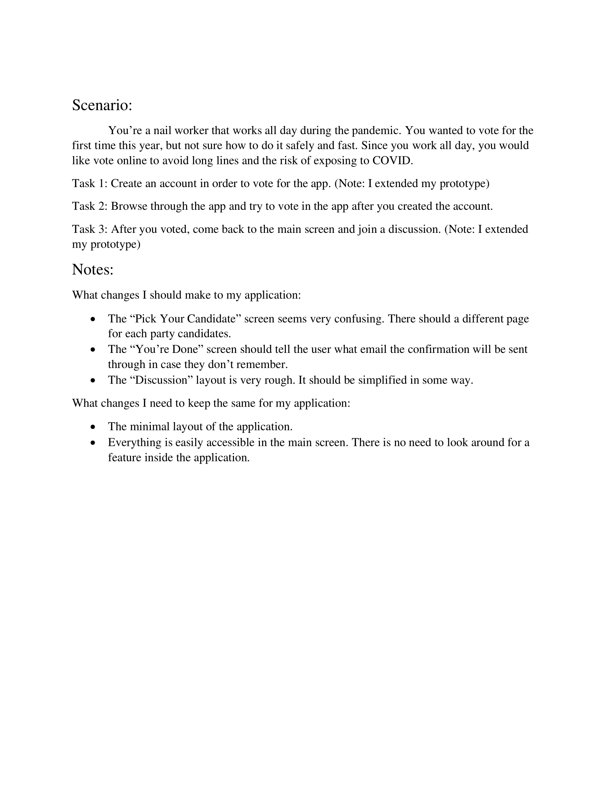

Problem Statement: Secure Voting During Covid

Coming up with a safer way to secure election votes during a pandemic.
Affinity Diagram: Secure Voting During Covid
We brainstormed various way to make voting during pandemic efficient and safe.
Persona: 4 Personas for Secure Voting
We created different Personas that will portray the typical user for secure voting app.
Storyboard: Tracy Chester
A comic stric that illustrated how a normal person can benefit from secure voting app.
Sketches: Secure Voting During Covid
Sketches of different design for voting app.
Paper Prototype: Secure Voting App
A paper prototype video that shows secure voting app functions and how users can interact with it.
Usability Testing: Secure Voting App
A scenerio of a user and feedback from usability tests.
Low-Fi Prototype: Secure Voting App
A low-fi version of our secure voting app.
Hi-fi Prototype: Secure Voting App
A Hi-fi version of our secure voting app.
Final Presentation: Secure Voting App
The final presentation of our Hi-fi voting app.